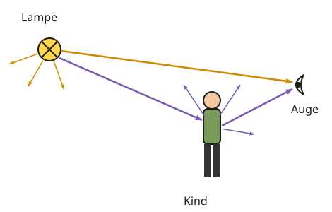

Wie wir sehen
Mit einem KI-Tutor lernen
Ein KI-Tutor erklärt dir diese Seite und hilft dir bei den Übungen. Wähl deinen Assistenten:
Mit Claude öffnen Mit ChatGPT öffnen Mit Mistral Vibe öffnen
Du nutzt dein eigenes Konto beim Anbieter. Der Assistent ist kein Angebot von lernapps.net: lernapps liefert nur Inhalte und Übungen. Die Wahl gilt für alle Seiten, nur auf diesem Gerät.
Warum sehen wir im Dunkeln nichts?
In einem stockdunklen Zimmer siehst du nicht einmal deine Hand, obwohl deine Augen offen sind. Sobald das Licht angeht, siehst du die Lampe und alles im Zimmer. Was ist dazwischen passiert?
Nach dieser Seite kannst du mit Sender, Umlenker und Empfänger erklären, wie du etwas siehst. Du brauchst dafür, was du von den Lichtquellen weißt.
So sehen wir
Du siehst etwas nur, wenn Licht von ihm in dein Auge kommt. Das Auge schickt nichts los, es empfängt nur.
- Sender
Die Lichtquelle, die das Licht aussendet, zum Beispiel eine Glühlampe.
- Empfänger
Das Auge, das Licht aufnimmt.
- Umlenker
Ein beleuchteter Körper. Er leuchtet nicht selbst, sondern lenkt Licht, das auf ihn fällt, in viele Richtungen weiter, auch in dein Auge.

Orange ist der direkte Lichtweg, lila der indirekte über das Kind.
Quelle: eigene Zeichnung. Lizenz: CC-BY-4.0.So liest du die Zeichnung: Jeder Pfeil ist ein Weg des Lichts. Der orange Pfeil geht von der Lampe direkt ins Auge: Das ist der direkte Lichtweg. So siehst du die Lampe selbst. Der lila Weg geht erst zum Kind und von dort ins Auge: Das ist der indirekte Lichtweg. So siehst du das Kind. Die kleinen Pfeile zeigen: Lampe und Kind schicken Licht in viele Richtungen, nicht nur zu diesem einen Auge.
Merke
Um einen Gegenstand zu sehen, muss direktes oder indirektes Licht von ihm in dein Auge gelangen. Indirekt heißt: Der Körper wird beleuchtet, und das Licht kommt danach in dein Auge. Körper, die nicht selbst leuchten, siehst du nur, wenn eine Lichtquelle sie beleuchtet.
Beispiel
Ein Buch im Zimmer lesen
Du liest abends ein Buch unter der Schreibtischlampe.
- Sender: die Schreibtischlampe. Sie leuchtet selbst.
- Umlenker: das Buch. Es wird beleuchtet und lenkt das Licht in viele Richtungen.
- Empfänger: dein Auge.
Das Buch siehst du über den indirekten Lichtweg: Lampe → Buch → Auge. Schaust du in die Lampe, siehst du sie über den direkten Lichtweg: Lampe → Auge.
Übung
Übung
Lösung
Richtige Antwort: A – Sender; B – Umlenker; C – Empfänger; D – direkter Lichtweg; E – indirekter Lichtweg
Die Lampe sendet Licht (Sender), das Kind lenkt es um (Umlenker), das Auge empfängt es (Empfänger). Der Weg Lampe → Auge ist direkt, der Weg Lampe → Kind → Auge indirekt.
Mehr dazu:
Übung
Lösung
Lampe → Apfel → Auge richtige Antwort
Der Apfel wird beleuchtet und lenkt das Licht in dein Auge. Das ist der indirekte Lichtweg.
Lampe → Auge
Auf diesem direkten Weg siehst du die Lampe, nicht den Apfel.
Auge → Apfel
Vom Auge geht kein Licht aus. Das Auge empfängt nur.
Den Apfel siehst du über den indirekten Lichtweg. Er ist ein Umlenker.
Mehr dazu:
Übung
Lösung
Richtige Antwort: Die Aussage stimmt nicht.
Das Auge ist der Empfänger. Es nimmt Licht auf, das vom Gegenstand kommt. Sonst könntest du auch im Dunkeln sehen.
Mehr dazu:
Übung
Lösung
Kein Licht fällt auf das Fahrrad, also kann es kein Licht in dein Auge lenken. richtige Antwort
Das Fahrrad ist ein Umlenker. Ohne Sender hat es kein Licht, das es umlenken kann.
Rote Gegenstände kann man im Dunkeln grundsätzlich nicht sehen.
Die Farbe spielt keine Rolle. Auch ein weißes Fahrrad sähest du im völlig dunklen Raum nicht.
Deine Augen brauchen erst eine Minute, um Strahlen auszusenden.
Augen senden keine Strahlen aus. Sie empfangen nur Licht.
Beleuchtete Körper siehst du nur, wenn eine Lichtquelle sie anstrahlt.
Mehr dazu: